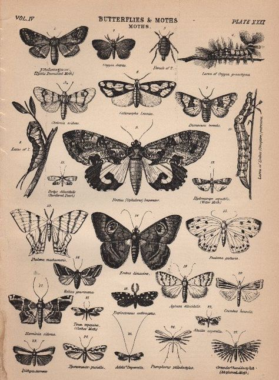
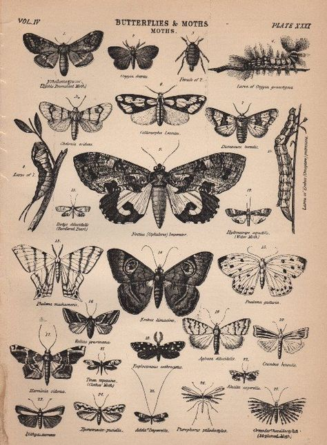

Dopamine is a crucial neurotransmitter that significantly influences the brain's reward system, affecting pleasure, motivation and learning. It modulates the mesolimbic and mesocortical pathways, which is essential for predicting and responding to rewards. Dopamine's role goes beyond just pleasure, it impacts motivation and reinforcement learning. Its function is complex and shaped by genetic and environmental factors. Understanding dopamine's multifaceted role in the human reward process is vital, as it has implications for mental health and addiction. This essay will explore these aspects, highlighting dopamine's contributions to motivation, learning and broader behavioural outcomes.
Dopamine is a crucial neurotransmitter in the brain's reward system, involved in mood regulation, attention and, learning. Produced mainly in the substantia nigra and ventral tegmental area, dopamine neurons project to various brain regions, forming pathways like the mesolimbic and mesocortical pathways (Wise, 2004). The mesolimbic pathway, known as the 'reward pathway,' is essential for experiencing pleasure and reinforcing rewarding behaviours (Schultz, 2007). Dopamine release in these pathways helps encode reward prediction errors, aiding in behaviour adjustment (Shultz, Dayan and Montague, 1977). Understanding dopamine's neuroanatomy and function is vital for understanding its role in reward processing and its broader impact on behaviour and mental health (Berridge and Robinson, 1998).
Also, dopamine plays a central role in reward processes by influencing reward and prediction and incentive salience. It is crucial for predicting rewards and discovering reward prediction errors, which help the brain adjust expectations and behaviours based on outcomes (Schultz, Dayan and Montague, 1997). This neurotransmitter signals discrepancies between expected and actual rewards, reinforcing learning and behavioural adaptation. Additionally, dopamine modulates incentive salience, making certain stimuli more attractive or desirable, therefore driving motivation and goal directed behaviour (Berridge and Robinson, 1998). This dual role in reward prediction and incentive salience underscores dopamine's importance in shaping how we respond to rewards and pursue goals. Its influence extends beyond just pleasure, affecting how rewards are anticipated and sought after, which is critical for understanding motivation and decision-making processes (Wise, 2004). These functions highlight the complex and multifaceted nature of dopamine in the human reward system.
Additionally, dopamine significantly influences motivation and learning by enhancing the perceived value of rewards and driving effort related behaviours (Salamone, Correa and Farrar, 2007). It plays a crucial role in reinforcement learning, helping to encode information about rewards and punishments, and facilitating behaviour adjustment based on past experiences (Montague, Hyman and Cohen, 2004). By modulating anticipation of rewards and willingness to exert effort, dopamine ensures engagement and adaptability in pursuit of a goal (Berridge and Robinson, 1998). This interplay is vital for understanding the various psychological and behavioural phenomena.
However, there are individual differences in dopamine function. They are influenced by genetic and environmental factors, leading to variability in how people experience and pursue rewards. Genetic variations, such as differences in dopamine receptor genes, can affect dopamine signalling and influence traits like impulsivity and reward sensitivity (Dreher et al., 2008). Environmental factors, including stress and early life experiences, also impact dopamine pathways, potentially altering behaviour and cognitive processes (Pizzagalli et al., 2008). These individual differences underscore the complexity of dopamine's role in reward processing and highlights the need for personalised approaches in understanding and treating disorders related to dopamine dysregulation.
Also, dopamine's role goes beyond the simple experience of pleasure, it encompasses motivation, learning, and behavioural reinforcement. Whilst traditionally associated with the sensation of pleasure, research indicates that dopamine is more critically involved in driving motivation and reinforcing behaviours that lead to rewards (Volkow and Morales, 2015). The neurotransmitter modulates how rewards are anticipated and sought after, influencing goal-directed behaviour rather than just hedonic pleasure. This perspective shifts the understanding of dopamine from a 'pleasure chemical' to a key player in learning and motivation, this impacts how individuals pursue and achieve goals (Berridge and Robinson, 1998). Recognising dopamine's broader role is essential for understanding its involvement in complex behaviours and mental health conditions.
It is also important to note, that dysregulation of dopamine pathways is implicated in various disorders, particularly addiction and mental health conditions such as schizophrenia and depression. In addiction, alterations in dopamine function lead to compulsive drug seeking behaviour and diminished sensitivity to natural rewards (Koob and Volkow, 2010). Chronic drug use disrupts dopamine signalling, which reinforces the addictive behaviour, making recovery challenging. Also, in mental health, dopamine dysregulation is linked to conditions like schizophrenia, where abnormal dopamine activity contributes to symptoms such as hallucinations and delusions (Grace, 2016). Similarly, depression is associated with reduced dopamine activity, leading to diminished motivation and anhedonia (Pizzagalli, 2014). Understanding how dopamine dysfunction contributes to these disorders is crucial for developing targeted treatments, as it provides insights into the underlying neurobiological mechanisms driving these conditions.
Understanding dopamine's role in reward and motivation has profound implications for both basic research and clinical applications. While dopamine is clearly central to reward processing, its function extends far beyond simple pleasure, encompassing learning, motivation, and behavioral adaptation. Individual differences in dopamine function may help explain variations in personality and vulnerability to certain disorders. Continued research in this field promises to yield new insights and therapeutic approaches for conditions involving dopamine system dysfunction.
Berridge, K. C., & Robinson, T. E. (1998). What is the role of dopamine in reward: Hedonic impact, reward learning, or incentive salience? Brain Research Reviews, 28(3), 309–369. https://doi.org/10.1016/S0165-0173(98)00019-8
Dreher, J.-C., Kohn, P., Kolachana, B., Weinberger, D. R., & Berman, K. F. (2008). Variation in dopamine genes influences responsivity of the human reward system. Proceedings of the National Academy of Sciences, 106(2), 617–622. https://doi.org/10.1073/pnas.0805517106
Grace, A. A. (2016). Dopamine system dysregulation by the ventral subiculum as the common pathophysiological basis for schizophrenia psychosis, psychostimulant abuse, and stress. Neurotoxicity Research, 30, 293–298. https://doi.org/10.1007/s12640-016-9610-5
Koob, G. F., & Volkow, N. D. (2010). Neurocircuitry of addiction. Neuropsychopharmacology, 35(1), 217–238. https://doi.org/10.1038/npp.2009.110
Montague, P. R., Hyman, S. E., & Cohen, J. D. (2004). Computational roles for dopamine in behavioural control. Nature, 431(7010), 760–767. https://doi.org/10.1038/nature03015
Pizzagalli, D. A. (2014). Depression, stress, and anhedonia: Toward a synthesis and integrated model. Annual Review of Clinical Psychology, 10, 393–423. https://doi.org/10.1146/annurev-clinpsy-050212-185606
Pizzagalli, D. A., Bogdan, R., Ratner, K. G., & Jahn, A. L. (2007). Increased perceived stress is associated with blunted striatal responses to reward in adolescence. Biological Psychiatry, 62(2), 114–122. https://doi.org/10.1016/j.biopsych.2006.09.015
Salamone, J. D., Correa, M., & Farrar, A. (2007). Effort-related functions of nucleus accumbens dopamine and associated forebrain circuits. Psychopharmacology, 191(3), 461–482. https://doi.org/10.1007/s00213-006-0668-9
Schultz, W. (2007). Multiple dopamine functions at different time courses. Annual Review of Neuroscience, 30, 259–288. https://doi.org/10.1146/annurev.neuro.28.061604.135722
Schultz, W., Dayan, P., & Montague, P. R. (1997). A neural substrate of prediction and reward. Science, 275(5306), 1593–1599. https://doi.org/10.1126/science.275.5306.1593
Volkow, N. D., & Morales, M. (2015). The brain on drugs: From reward to addiction. Cell, 162(4), 712–725. https://doi.org/10.1016/j.cell.2015.07.046
Wise, R. A. (2004). Dopamine, learning and motivation. Nature Reviews Neuroscience, 5(6), 483–494. https://doi.org/10.1038/nrn1406